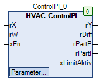

ControlPI (FB)¶
FUNCTION_BLOCK ControlPI
Kurzbeschreibung¶
Proportional-Integral wirkender Regler ( PI-Regler )Der Wirksinn ( invertiert / direkt ) ist ebenfalls einstellbar.Typische Anwendung: Regelstrecken mit Stellgliedern, die keinen speichernden Charakter haben.
Darstellung¶

Schnittstellen¶
Eingänge¶
Name Datentyp Wertebereich Initialwert Funktion rX REAL Analoger Istwert rW REAL Analoger Sollwert xEn BOOL Freigabe des Reglers
Ausgänge¶
Name Datentyp Wertebereich Initialwert Funktion rY REAL 0.0 Ausgangssignal des Reglers rDiff REAL Regelabweichung rPartP REAL Proportionalanteil am Ausgangssignal rPartI REAL Integralanteil am Ausgangssignal xLimitActive BOOL Status - Grenzwertüberschreitung
Sollwerte / Parameter¶
Name Datentyp Wertebereich Initialwert Funktion rMax REAL 100.0 Oberer absoluter Grenzwert des Ausgangssignals rMin REAL 0.0 Unterer absoluter Grenzwert des Ausgangssignals rTn REAL 0.0 ... 200.0 Nachstellzeit in Sekunden rKp REAL 0.0 ... 2.0 Verstärkungsfaktor rOffset REAL 0.0 Versatz rInitValue REAL 0.0 Initialisierungswert für das Ausgangssignal rYDisabled REAL 0.0 Ausschaltwert eAction eControlMode eControlMode.Inverted Wirksinnn des Reglers ( Invertiert, Direkt ) eManModeN eManNum eManNum.Auto Betriebsart für das Ausgangssignal des Reglers rManValue REAL Ausgangssignal im Handbetrieb
Funktionsbeschreibung¶
Allgemeines¶
Dieser Funktionsbaustein enthält einen proportional-integral wirkenden Pegler ( PI-Regler ).
Das Ausgangssignal des Reglers rY wird bei freigegebenem Regler ( xEn = TRUE ) und in der Betriebsart Automatik des Reglers ( eManModeN = eManNum.Auto ) wie folgt berechnet:
Ausgangssignal: rY = Proportional-Anteil + Integral-Anteil
Proportionalanteil: Proportionalanteil = rKp * Regelabweichung
Regelabweichung: Regelabweichung = rW - ( rx + rOffset ) [ Wirksinn - Invertiert: eAction = eControlMode.Inverted ]
Regelabweichung = rX - ( rW + rOffset ) [ Wirksinn - Direkt: eAction = eControlMode.Direct ]
Integralanteil: Integralanteil = ( Proportionalanteil * ( Abtastzeit / Nachstellzeit )) + Integralanteil ( t-Abtastzeit )
Legende: t-Abtastzeit ... Zeitpunkt, der um die Abtastzeit vor dem aktuellen Zeitpunkt t lag
Abtastzeit ... Zeitdauer zwischen zwei Aufrufen des Funktionsblocks
t ... aktueller Zeitpunkt
Regeln / Eigenschaften - Nachstellzeit rTn
Sie darf nur Werte > 0 annehmen.
rTn >>> Abtastzeit: Der Integralanteil bleibt konstant
Regelabweichung = 0: Der Integralanteil bleibt konstant
Je nach Wirksinn des Reglers eAction werden die Ist- und Sollwerte wie folgt festgelegt:
eAction Regelabweichung Funktion eControlMode.Invertiert rW - ( rx + rOffset ) Wirksinn - Invertiert eControlMode.Direct rX - ( rW + rOffset ) Wirksinn - Direkt
Integralanteil¶
Der Integralanteil ist sowohl nach oben als auch nach unten durch folgende absolute Grenzwerte begrenzt:
Oberer Grenzwert = rMax - Proportionalanteil
Unterer Grenzwert = rMin - Proportionalanteil
Freigabeeingang xEn¶
Bei nicht aktivem Freigabeeingang ( xEn = FALSE ) wird der Ausschaltwert rYDisabled zum Ausgang rY übertragen
( Voraussetzung: eManModeN = eManNum.Auto ) und durch die absoluten Grenzwerte begrenzt. Der Integralanteil wird auf 0.0 gesetzt.
Bei aktivem Freigabeeingang ( xEn = TRUE ) wird as Ausgangssignal gemäß oben stehender Formel berechnet und zum Ausgang rY übertragen
( Voraussetzung: eManModeN = eManNum.Auto ) und durch die absoluten Grenzwerte begrenzt.
Bei jeder ansteigenden Flanke am Freigabeeingang xEn wird der Regelprozess neu gestartet.
Neustart des Reglers¶
Bei jeder ansteigenden Flanke am Freigabeeingang xEn wird der Regelprozess neu gestartet. ( Voraussetzungen: eManModeN = eManNum.Auto und xEn = TRUE )
Der Integralanteil wird auf die Differenz zwischen rInitValue und dem Proportionalanteil festgelegt.
Regelabweichung rDiff¶
Die Regelabweichung entspricht dem Wert der Regelabweichung nach oben genannter Formel.
Proportionalanteil am Ausgangssignal rPartP¶
An diesem Ausgang steht immer der Proportionalanteil des Ausgangssignals zur Verfügung, siehe oben stehende Beschreibung.
Integralanteil am Ausgangssignal rPartI¶
An diesem Ausgang steht immer der Integralanteil des Ausgangssignals zur Verfügung, siehe oben stehende Beschreibung.
Absolute Grenzwerte rMin und rMax¶
Das Ausgangssignal des Reglers rY wird durch die absoluten Grenzwerte rMin nach unten und rMax nach oben begrenzt.
Der absolute Grenzwert rMin wird auf den aktuellen Wert von rMax - 0.1 festgelegt, falls er >= dem aktuellen Wert von rMax ist.
Davon ausgenommen ist lediglich der Handbetrieb für das Ausgangssignal des Reglers (eManModeN = eManNum.Man ).
Status - Grenzwertüberschreitung xLimitActive¶
Der Status der Grenzwertüberschreitung wird aktiviert ( xLimitActive = TRUE ), falls eine Grenzwertüberschreitung nach oben oder unten vorliegt ( xEn = TRUE ).
Der Status der Grenzwertüberschreitung wird nicht aktiviert ( xLimitActive = FALSE ), falls keine Grenzwertüberschreitung vorliegt oder das Freigabesignal deaktiviert ist ( xEn = FALSE ).
Eine Grenzwertüberschreitung liegt vor, falls das Ausgangssignal des Reglers rY den oberen Grenzwert rMax erreicht / überschreitet oder
den unteren Grenzwert rMin erreicht / unterschreitet.
Betriebsart für das Ausgangssignal des Reglers eManModeN¶
Der Parameter eManModeN erlaubt die Umschaltung des Ausgangssignals rY vom Automatik- in den Handbetrieb und umgekehrt.
Im Handbetrieb übernimmt das Ausgangssignal rY das Ausgangssignal im Handbetrieb rManValue. Der Integralanteil wird auf die Differenz zwischen rInitValue und dem Proportionalanteil festgelegt.
eManModeN rY Funktion eManNum.Auto Signal gemäß Formel / Ausschaltwert Automatikbetrieb - Ausgangssignal eManNum.Man rManValue Handbetrieb - Ausgangssignal
Visualisierung¶
Information¶
Element Autoren Datum Version Anmerkungen Funktion Adam Bartod 03.2017 1.0 Ursprungsversion Programmierung Adam Bartod 03.2017 1.0 Ursprungsversion Test Jochen Reu 11.2017 1.0 Ursprungsversion Dokumentation Jochen Reu 11.2017 1.0 Ursprungsversion
Codesys¶
- InOut:
Scope Name Type Initial Comment Input rX REAL Analoger Istwert rW REAL Analoger Sollwert xEn BOOL Freigabe des Reglers rYMax REAL 100 Oberer absoluter Grenzwert des Ausgangssignals rYMin REAL 0 Unterer absoluter Grenzwert des Ausgangssignals rTn REAL 200 Nachstellzeit in Sekunden rKp REAL 2 Verstärkungsfaktor rOffset REAL 0 Versatz rInitValue REAL 0 Initialisierungswert für das Ausgangssignal rYDisabled REAL 0 Ausschaltwert eAction eControlMode eControlMode.Inverted Wirksinnn des Reglers ( Invertiert, Direkt ) eManModeN eManNum eManNum.Auto Betriebsart für das Ausgangssignal des Reglers rManValue REAL Ausgangssignal im Handbetrieb Output rY REAL 0 Ausgangssignal des Reglers rDiff REAL Regelabweichung rPartP REAL Proportionalanteil am Ausgangssignal rPartI REAL Integralanteil am Ausgangssignal xLimitAktiv BOOL Status - Grenzwertüberschreitung